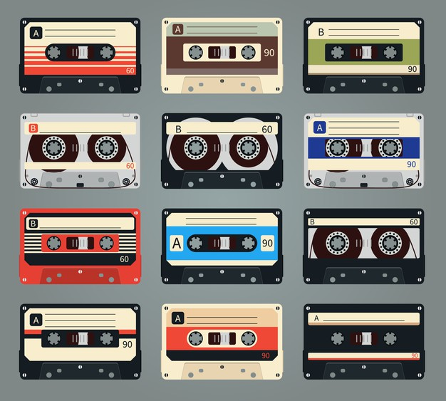

Hits mais recentes lançados no Youtube.

Músicas com vozes masculinas.

Músicas antigas regravadas.
Mais música com Luana Cristina
Dicas de músicas para ouvir e curtir, dicas de instrumentos musicais, de canto e locais para comprar instrumentos e ouvir músicas e assistir vídeos e ler artigos.
Hits mais recentes lançados no Youtube.
Músicas com vozes masculinas.
Músicas antigas regravadas.